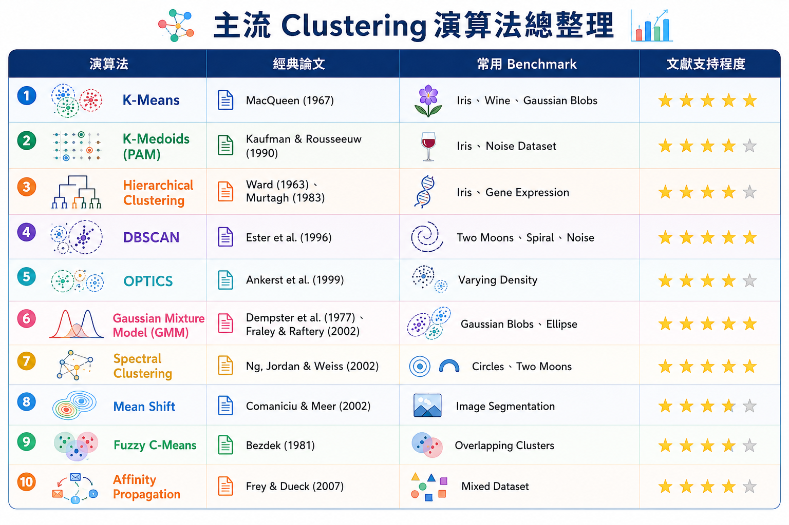
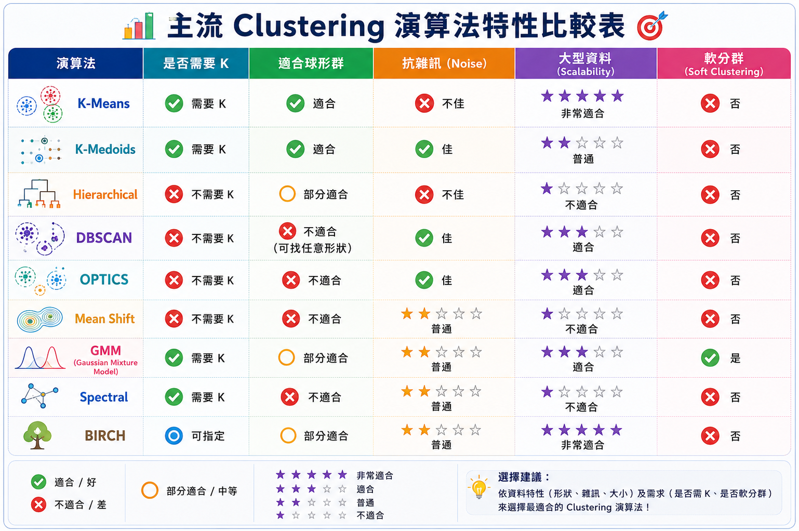
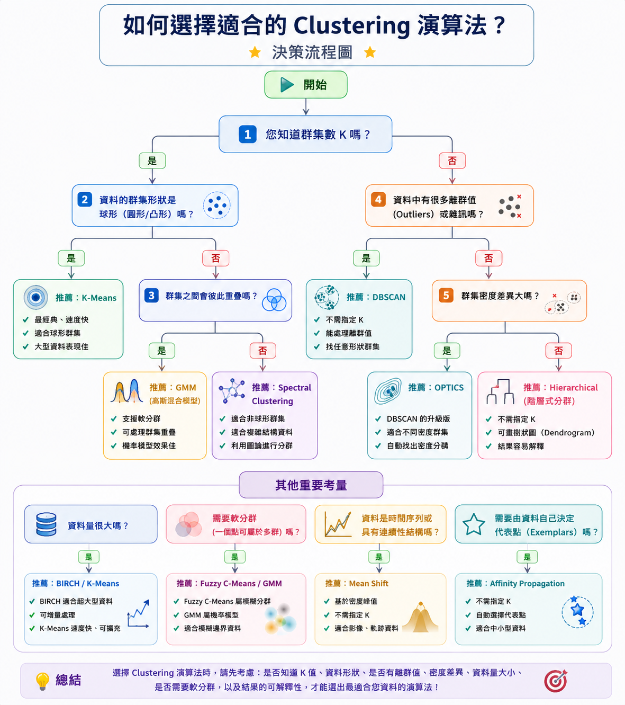
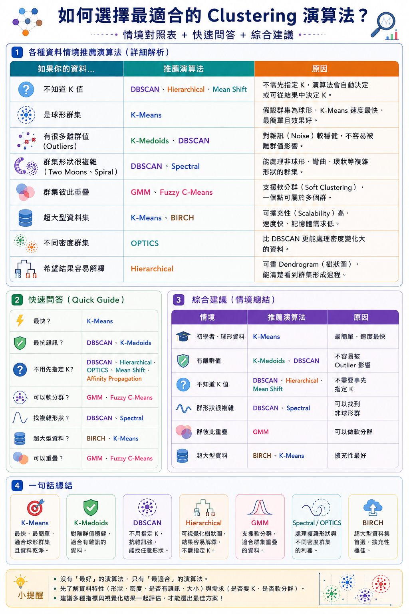
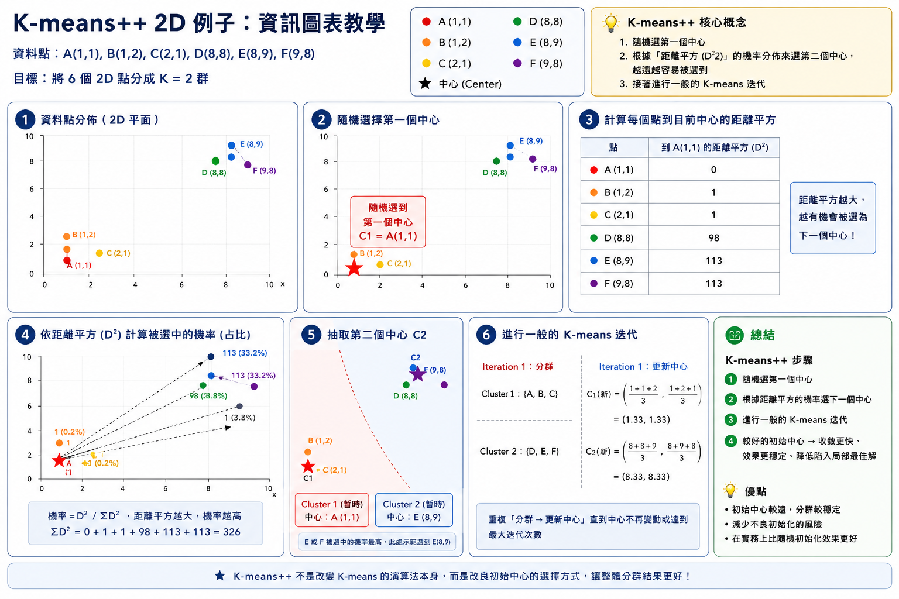
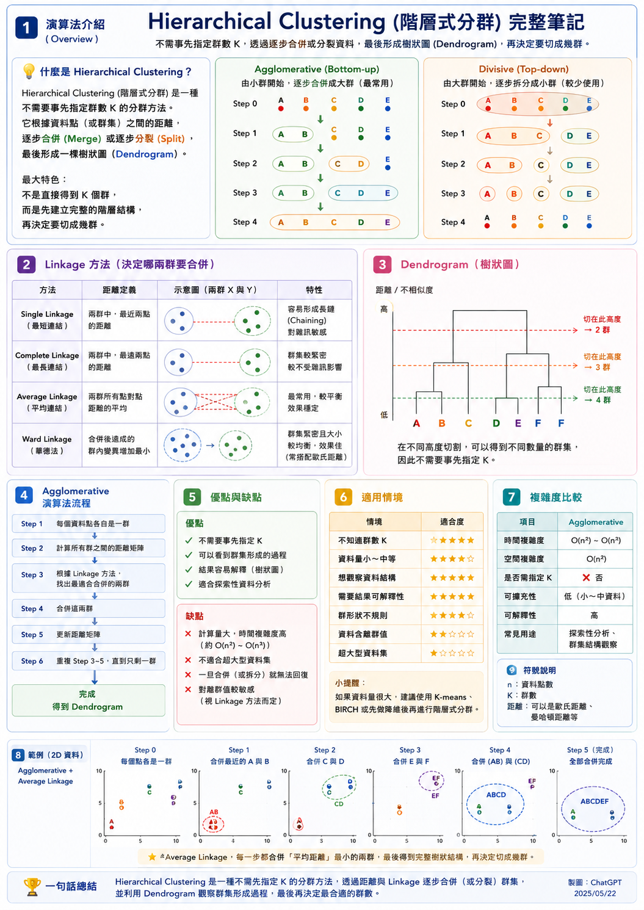
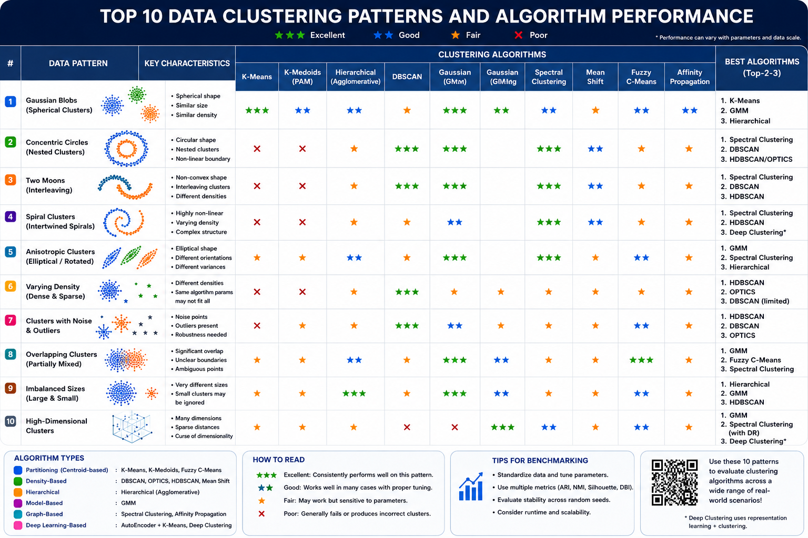

K-Means、K-Medoids、DBSCAN、GMM 與核函數分群的水墨風動態視覺化
點擊右側畫布可任意擺放或移除數據點，在此調整超參數並進行即時分群更新。
點擊開啟與 AI 導師的討論歷程與文獻分析：
兩者皆為**劃分式分群 (Partitioning Clustering)**，目標是最小化各點到群心的內誤差平方和。
在本沙箱中，K-Means 用「十」字形虛線圓環代表群心，而 K-Medoids 的中心則會直接鎖定在某個實心點上，並隨每一次迭代進行轉移。
DBSCAN 著重於資料的分佈密度，可自動偵測噪點，且能處理任意複雜形狀的群聚。
DBSCAN 在處理 Concentric Circles、Two Moons、Spiral 等「非凸形 (Non-convex)」結構時表現完美。本沙箱會動態以紅點標記 Core Point，並將無法歸類的點視為灰色噪聲點。
GMM 假設所有數據點是由多個具有不同均值 $\mu_k$ 和協方差矩陣 $\Sigma_k$ 的高斯分佈混合產生的。
相較於 K-Means 的硬分配 (Hard Assignment)，GMM 是一種軟分配 (Soft Assignment)，點的顏色是多種群色混合的漸層。沙箱會繪製出高斯的 $1\sigma, 2\sigma$ 擴散協方差橢圓，直觀呈現高斯分佈的形狀與方向。
當數據在高維空間中是非線性可分時，我們可以使用核函數將點映射到高維希爾伯特空間，以使它們線性可分。
點 $x_i$ 到高維空間群心 $c_k$ 的距離平方可完全由核矩陣表示：
這是譜分群 (Spectral Clustering) 的核近似實現。當遭遇同心圓 (Circles) 或螺旋線 (Spiral) 時，普通的 K-Means 會無能為力，但 Kernel K-Means 透過 RBF 核函數，能以超凡的非線性分割能力完美分離非凹形邊界！
本筆記依據經典文獻、Survey 論著及基準測試 (Benchmark)，整理十種資料分佈下各大演算法的表現評級。旨在幫助學子進行期末複習，並應對課堂上對 AI 可信度的學術追問。
點擊下方圖表卡片可開啟高解析度放大檢視，深入學習各類分群演算法的核心機制、決策路徑與演算實例。







| 資料分佈模式 | K-Means | K-Medoids | DBSCAN | GMM | Spectral / Kernel |
|---|---|---|---|---|---|
| Gaussian Blobs (圓形群聚) | ⭐⭐⭐ (優) | ⭐⭐⭐ (優) | ⭐⭐☆ (良) | ⭐⭐⭐ (優) | ⭐⭐⭐ (優) |
| Concentric Circles (同心雙環) | ⭐☆☆ (差) | ⭐☆☆ (差) | ⭐⭐⭐ (優) | ⭐☆☆ (差) | ⭐⭐⭐ (優) |
| Two Moons (雙月牙形) | ⭐☆☆ (差) | ⭐☆☆ (差) | ⭐⭐⭐ (優) | ⭐☆☆ (差) | ⭐⭐⭐ (優) |
| Spiral (雙螺旋線) | ⭐☆☆ (差) | ⭐☆☆ (差) | ⭐⭐⭐ (優) | ⭐☆☆ (差) | ⭐⭐⭐ (優) |
| Anisotropic (橢圓拉伸) | ⭐☆☆ (差) | ⭐⭐☆ (良) | ⭐☆☆ (差) | ⭐⭐⭐ (優) | ⭐⭐⭐ (優) |
| Varying Density (密度不均) | ⭐☆☆ (差) | ⭐☆☆ (差) | ⭐⭐☆ (需調參) | ⭐⭐☆ (良) | ⭐⭐☆ (良) |
| Noise & Outliers (噪聲干擾) | ⭐☆☆ (怕噪點) | ⭐⭐☆ (較耐噪) | ⭐⭐⭐ (自動去噪) | ⭐☆☆ (易偏差) | ⭐⭐☆ (良) |
| Overlapping (群聚重疊) | ⭐⭐☆ (硬切分) | ⭐⭐☆ (硬切分) | ⭐☆☆ (差) | ⭐⭐⭐ (軟機率) | ⭐⭐☆ (良) |
| Imbalanced Sizes (規模不均) | ⭐☆☆ (偏好均等) | ⭐☆☆ (偏好均等) | ⭐⭐☆ (良) | ⭐⭐⭐ (估計權重) | ⭐⭐☆ (良) |
| High Dimension (高維資料) | ⭐⭐☆ (易受維度災難) | ⭐☆☆ (計算慢) | ⭐☆☆ (距離失效) | ⭐☆☆ (參數過度) | ⭐⭐☆ (常搭配降維) |